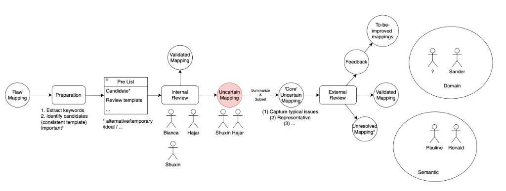

Ontology harmonization (SNOMED CT, LOINC, NCIT)¶
Status: Not started
Map NMCB / PCNN variables to existing biomedical ontologies and produce machine-readable variable–term pairs, integrated with the PCNN codebook. Published workflow; next steps: LinkML representation and expert review with AI/LLM support.
Publication¶
Semantic Harmonization Workflow of Health Data: Application in the Post-COVID Network Netherlands
- IOS Press (open access): 10.3233/SHTI260692
- Authors: Hajar Hasannejadasl, Shuxin Zhang, Bianca M. Boxma-de Klerk, Jos Bosch, Ronald Cornet, Sander M.J. van Kuijk
- Summary: Structured workflow combining manual curation and expert semantic annotation (ontologies + contextual suffixes for measurement nuances). Applied to a representative PCNN subset (demographics, COVID-19 history, questionnaires). Mappings designed for expert review to ensure accuracy and reproducibility.
Deliverables¶
| Deliverable | Description |
|---|---|
| Variable ↔ term pairs | Machine-readable mappings to SNOMED CT, LOINC, NCIT (and related standards where used) |
| PCNN codebook integration | Harmonized fields aligned with PCNN codebook / metadata format |
| Curated subset export | Example workbook: codebook_curated_pcnn_subset_MIE_2026.xlsx (MIE 2026 subset) — add to repo at docs/files/fair/ontology/ when copied from Downloads |
Expert review workflow (next phase)¶
Target process for scaling review with AI agent / LLM assistance (human validation remains authoritative):

| Stage | What happens | People (example) |
|---|---|---|
| Raw mapping | Initial variable ↔ ontology candidates | — |
| Preparation | Extract keywords; identify candidates (consistent template) | — |
| Pre list | Candidate list + review template (alternative / temporary / ideal flags) | — |
| Internal review | PCNN / NMCB team validates clear mappings | Bianca, Hajar, Shuxin |
| Validated mapping | Accepted mappings (exit path) | — |
| Uncertain mapping | Needs discussion | Shuxin, Hajar |
| Summarize & subset | Core uncertain set: typical issues, representative cases | — |
| External review | Domain + semantic experts | Domain: Sander (+ TBD); Semantic: Pauline, Ronald |
| Outcomes | Validated mapping · To-be-improved (feedback) · Unresolved mapping | — |
Planned tooling: represent the codebook in LinkML (nmcb-codebook/linkml/schema/) so mappings, value sets, and review status can be versioned and exported consistently; use LLM agents for draft candidates and QC checks, not as final approval.
LinkML (in progress)¶
Work lives in nmcb-fair/nmcb-codebook:
linkml/schema/nmcb_codebook_schema.yaml— classes for datasets, variables, value sets, mappings,OMOPMappinglinkml/metadata/nmcb_codebook_metadata.yaml— instance datalinkml/scripts/export_excel.py— generates Excel including merged OMOP sheet
See linkml/metadata/README in the codebook repo.
PCNN / PAIS context¶
- Overlaps with PAIS metadata coordination (Health-RI, EHDS): variable-level ontologies vs study-level catalogue fields
- PCNN uses SNOMED CT, LOINC, NCIT in codebook (per coordination notes)
- NMCB codebook is the operational variable dictionary; ontology columns feed enriched exports used by NMCB ChatGPT
Handover checklist¶
- [ ] Add
codebook_curated_pcnn_subset_MIE_2026.xlsxtodocs/files/fair/ontology/ - [ ] Document where latest ontology mapping tables live in git (branch / release)
- [ ] Define LinkML fields for review status (
validated/uncertain/unresolved) - [ ] Record AI/LLM prompt or agent repo if one is created for candidate generation
- [ ] Schedule external review slots with semantic (Pauline, Ronald) and domain (Sander) experts